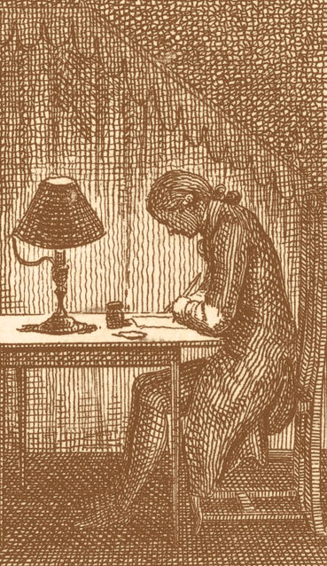

Cuándo y cómo
iniciar el no-contacto:
Cuando iniciar el no-contacto es fácil: INMEDIATAMENTE. Si tu ex rompió contigo, debes acudir inmediatamente al modo de no-contacto. Cualquier contacto que tengas, lo hará peor.
Cuanto más tiempo te quedes en la fase de las súplicas y la negociación, más tiempo va a tomar para que sanes... y lo más probable es que tendrás un menor respeto por ti mismo/a cuando todo haya terminado.
No tienes que "anunciar" una política de no-contacto. Tu ex rompió contigo, eso es todo. A partir de ese momento, todo se trata de ti. Se trata de tu dolor, tu sanación, tu futuro, tu felicidad, tu vida. Lo único que puedes controlar es a ti mismo/a, así que enfócate en ti, no en tu ex. Tu ex ya no está en el cuadro, no hay obligación de decirle que él o ella ha sido bloqueado de tu vida. No es necesario explicarle por qué no estás en contacto, cualquiera lo entendería.
El no-contacto es para tu recuperación
No puedo repetirlo suficiente: el no-contacto es para ti. No es una estrategia para hacer que tu ex te extrañe y te ruegue para estar juntos de nuevo. He visto muchos casos de personas en los foros de Internet que anuncian el no-contacto, convencidos de que el anuncio es sólo para su propia curación... pero el punto es en realidad conseguir una reacción del ex, para evaluar cómo se siente el ex, si el ex sigue pensando en ellos. Luego se pasan los siguientes minutos, horas, días y semanas esperando una respuesta del ex, desconsolado por volver.
¡NO!
No va a suceder. Se necesitan dos para hacer una relación, pero sólo uno para romperla, y tu ex la rompió. El no-contacto, no va a revivir tu relación, sino que va a sanarte.
Al anunciar que estarás sin contacto, también existe la muy alta probabilidad de que sea percibido por el ex como un juego.
La mayoría de la gente verá a través de tu anuncio de no-contacto, una manera de manipular, tratar de hacer daño y de hacer que te extrañen. Incluso si en realidad no es esa tu intención, a menudo se percibe de esa manera de todos modos. Y si rompes tu propia política de no-contacto, corres el riesgo de parecer bastante tonto/a.
No hace falta anunciarlo;
el ex lo entenderá
Y si lo piensas, es un poco raro el contactar a alguien con el fin de anunciarle que ya no tendrás contacto con ellos. Las acciones hablan más que las palabras: corta el contacto y deja que tu ex caiga en cuenta de que ha comenzado el no-contacto y que él o ella lidie con el vacio que esto genera.
Algunas personas dicen que un anuncio de no-contacto puede ser útil para su propia curación. Es una manera de trazar una línea en la arena, hacer un esfuerzo para reconocer que todo ha terminado, para demostrarte a ti mismo que eres fuerte y que comenzarás a vivir tu vida para ti, inmediatamente. Puede ser particularmente útil si tu ex te sigue contactando, empujándote para ver cómo estás y tratando de ser "amigos", mientras que todavía está el dolor y la recuperación.
Yo no lo recomiendo, pero si realmente crees que tienes que anunciar el "no-contacto" para ti; para tu propia recuperación, entonces hazlo.
Es, aún más, comprensible si es en respuesta al contacto del ex. Pero hagas lo que hagas, no te obsesiones con ello: sólo hazlo rápidamente y sin esperar una respuesta.
Si vas a anunciar un no-contacto con a tu ex, cómo hacerlo?
Corto & nada personal
Debe ser muy, muy corto y no agregues nada personal ni dulce en él. Se debe dejar sin opciones abiertas para las respuestas, sin preguntas, sin puertas abiertas: después de todo, este es un mensaje para decir que ya no quieres ningún contacto.
Y queda claro que no debe ser en una llamada telefónica. Un SMS o correo electrónico es lo mejor, porque es una forma comunicación unidireccional con el ex.
Un ejemplo podría ser: "Querido xxx. Voy a tomarme un tiempo para mí ahora, así que no voy a estar en contacto contigo por un tiempo ni responderé si te pones en contacto. Mis mejores deseos".
